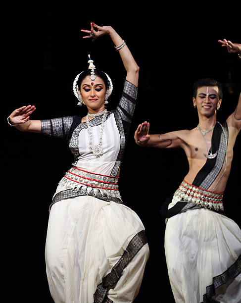

Odissi (ଓଡ଼ିଶୀ) also referred to as Orissi in old literature, oldest surviving classical dance of India, is a major ancient Indian classical dance that originated in the temples of Odisha – an eastern coastal state of India. Odissi, in its history, was performed predominantly by women,and expressed religious stories and spiritual ideas, particularly of Vaishnavism through songs written and composed according to the ragas & talas of Odissi music by ancient poets of the state. Odissi performances have also expressed ideas of other traditions such as those related to Hindu deities Shiva and Surya, as well as Hindu goddesses (Shaktism).
The theoretical foundations of Odissi trace to the ancient Sanskrit text Natya Shastra, its existence in antiquity evidenced by the dance poses in the sculptures of Kalingan temples,and archeological sites related to Hinduism, Buddhism and Jainism.It was suppressed under British Rule.The suppression was protested by the Indians, followed by its revival, reconstruction and expansion since India gained independence from the colonial rule.Odissi is traditionally a dance-drama genre of performance art, where the artist(s) and musicians play out a story, a spiritual message or devotional poem from the Hindu texts, using symbolic costumes,body movement, abhinaya (expressions) and mudras (gestures and sign language) set out in ancient Sanskrit literature.Classical Odia literature & the Gita Govinda set to traditional Odissi music are used for the abhinaya. Odissi is learnt and performed as a composite of basic dance motif called the Bhangas (symmetric body bends, stance). It involves lower (footwork), mid (torso) and upper (hand and head) body as three sources of perfecting expression and audience engagement with geometric symmetry and rhythmic musical resonance. An Odissi performance repertoire includes invocation, nritta (pure dance), nritya (expressive dance), natya (dance drama) and moksha (dance climax connoting salvation of the soul and spiritual release).
Traditional Odissi exists in two major styles, the first perfected by women and focussed on solemn, spiritual temple dance (maharis); the second perfected by boys dressed as girls (gotipuas) which diversified to include athletic and acrobatic moves, and were performed from festive occasions in temples to general folksy entertainment. Modern Odissi productions by Indian artists have presented a diverse range of experimental ideas, culture fusion, themes and plays.Odissi was the only Indian dance form present in Michael Jackson's 1991 hit single "Black or White".
|  | Odissi Dance Form |